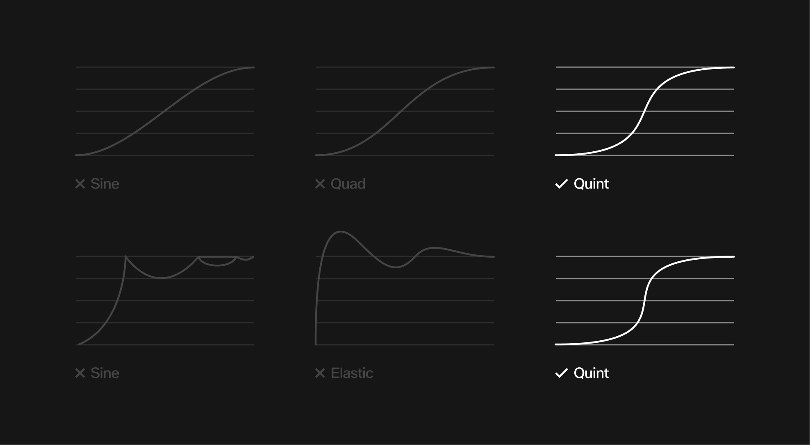

The motion box is a distilled form of the WPA logo, preserving its three distinct indents to keep the brand’s character visible in every application. More than just a container, it acts as the foundation of the entire motion system: adapting in size, position, and function to hold content while always reflecting the logo's DNA. By revolving the system around this unique shape, WPA ensures its identity is omnipresent, dynamic, and energetic across all formats.
Each mode defines how the box system behaves in motion and how it interacts with content. On their own, the modes provide clear and distinct behaviors, but they can also coexist. By layering or chaining them together, the box can move with near-endless variation. This flexibility opens up a wide spectrum of expression, while keeping the system consistent and unmistakably tied to the brand.
The box slides within the frame, adjusting its position and/or shape. As it moves, the container may stretch, compress, or shift dynamically to respond to the layout. Content inside adapts in real time — repositioning fluidly to maintain readability and hierarchy. This motion allows the box to travel between zones of focus or adapt layouts without breaking flow.
The box moves in the same way as Slide, but the content inside does not adjust fluidly. Instead, it cuts sharply to the new position or state. This introduces dynamism and creates a more energetic, editorial feel.
This mode appears when multiple boxes enter the composition. Each new box pushes or squeezes the previous box out of frame, either horizontally or vertically. The result is a seamless handoff of space, allowing multiple pieces of content to appear in sequence while keeping the design modular.
Amplify also introduces new boxes, but with a stronger emphasis. A new box appears from the center of the screen and expands outward, pushing the existing box out of frame from the middle. This amplifies the presence of the new content, highlighting it as dominant and giving the motion system a bold, central focus.
Color in the motion system follows a strict hierarchy to ensure clarity and brand consistency.
Gradients are reserved exclusively for backgrounds or fullscreen layers. When used in motion, gradients can be subtly animated to create depth and atmosphere. Their role is to add richness behind the box, not to take attention away from it.
The motion box should only ever appear in white or black. This preserves its connection to the WPA logo and ensures maximum legibility for content. The box itself is never filled with gradients.
The box always sits on top of the gradient. Even when the background is animated, the box remains a solid, stable container for information. This layering guarantees readability and reinforces the box as the central identity element.
The motion box is a distilled form of the WPA logo, preserving its three distinct indents to keep the brand's character visible in every application. More than just a container, it acts as the foundation of the entire motion system: adapting in size, position, and function to hold content while always reflecting the logo's DNA. By revolving the system around this unique shape, WPA ensures its identity is omnipresent, dynamic, and energetic across all formats.
All text and content inside the box must respect a consistent safe zone: a minimum of 10% of the box's total height must be maintained on every side including top, bottom, left, right, and around all indents or extremities of the shape. As a general reference, 32 px is a reliable minimum value. No text, icons, or content may enter this zone, as these margins ensure legibility, balance, and preserve the distinct character of the box across all applications.
Text and content inside the box can be placed in six standard positions: top left, top center, top right, bottom left, bottom center, or bottom right. If the box is tall, center left and center right are also possible. Narrow boxes should not use horizontal center placements, while wide boxes may. Placement is always determined by the box's proportions to maintain clarity, balance, and hierarchy.
Text and content always react to the proportions of the box in a responsive way. When the shape is elongated, longer titles or headers can flow across in one or more lines without breaking balance. When the shape is narrow, the text block adapts by reflowing. This ensures that typography always remains legible, balanced, and integrated with the unique shape of the box.
In addition to the box-based system, text can also exist independently with its own motion rules. For small devices or interactive contexts, a 3D scroll effect may be applied. This effect allows text to transition or switch dynamically, and can also be used for interactive or suggestive elements such as calls to action. The subtle 3D feel references the dimensional qualities of a paddle court, adding depth and variety to the motion language while staying connected to WPA's identity.
The motion rhythm should feel dynamic and enveloping, echoing the pace of padel. Movements flow with agility and momentum, shifting from quick bursts to smoother transitions. Curves must be exponential to create natural energy, while linear curves are avoided as they feel mechanical and lifeless.
Transitions should always rely on clear and defined easing curves. The diagrams illustrate how different curves influence motion over time. Softer progressions like Sine or Quad lack the necessary impact and should be avoided. Curves such as Quint or Expo create a more dynamic and controlled acceleration, aligning with the system's motion language. Bouncy or overly elastic functions disrupt clarity and should not be used.
Modes can be layered or chained together for variety, such as a slide followed by an amplify or multiple adds ending with a cut. They apply equally in horizontal and vertical formats, adapting responsively to ensure the motion language stays consistent across layouts.